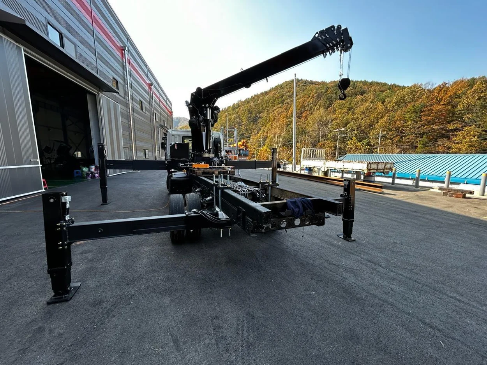

Дистанционное управление краном-манипулятором
Радиопульт позволяет оператору выбрать место, откуда видны крюк, груз и точка установки. При разгрузке за ограждением или у фасада здания это особенно важно.

Когда помогает радиопульт
Стационарные рычаги привязывают оператора к посту на машине. С пультом он может занять предусмотренное планом работ безопасное место с лучшим обзором. Например, при установке оборудования у стены оператору легче оценить зазор между грузом и фасадом. Порядок взаимодействия со стропальщиком по-прежнему определяется условиями подъёма.

Что уточнить при выборе
Попросите показать, какие движения стрелы доступны с пульта и какие предупреждения увидит оператор. Некоторые системы умеют записывать параметры работы, например угол поворота или продолжительность операции. Если эти данные нужны для разбора смены или обучения, проверьте функцию на конкретной модели.
Что потребуется для установки
На машине с механическими рычагами дооснащение может включать приводы, электронный блок и настройку связи со штатной системой управления. Перед заказом передайте монтажной организации модель и комплектацию крана. Включите в расчёт монтаж, ввод в эксплуатацию и обучение оператора. Для объектов с ограничениями на радиосвязь заранее уточните местные правила использования пульта.